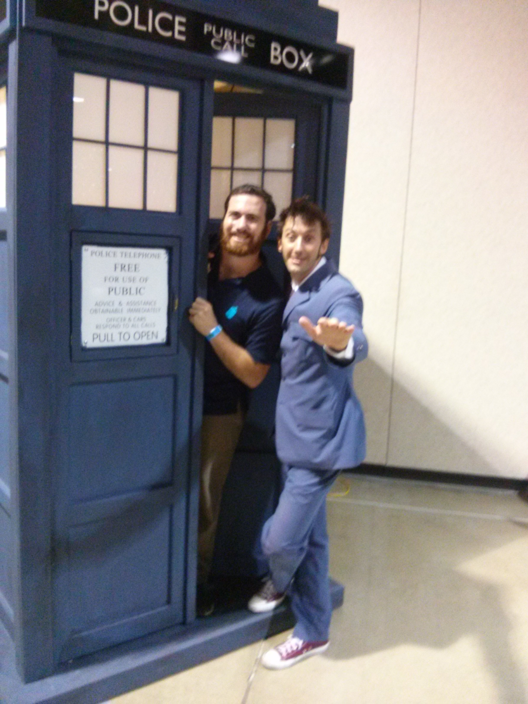

Personal Information
Hi, my name is Vincent Occhino. I was born in Fountain Valley, CA and moved there when I was about four years old from Garden Grove, CA. I have two older brothers and one younger sister. I am the “true” middle child. My oldest brother is four years older and my younger sister is four years younger than me. My other older brother is only a year and a half older than me. I have been fortunate enough to grow up with my parents still being married.
I am currently living in Marina, CA while I am attending California State University Monterey Bay (CSUMB). I lived in Fountain Valley, CA for about twenty-one and a half years before I moved to Marina, CA so I could attend the university I chose. I live in the Promontory Housing on the CSUMB campus. I attended community college before I transferred to CSUMB. At first, I did not know what I wanted to major in so going to community college gave me a chance to explore my options. I decided to explore business because I found I enjoyed business after I took some business classes. I ended up getting an associate in arts degree for transfer in business.
I found that business is a complex interesting subject. Every business is unique and faces its own challenges. That is what I like about it. The complexity of business intrigues me because even in the same industry different companies operate differently. The accounting and finance part of the business is the part I am most interested in. I enjoy working with numbers and coming up with solutions to problems that a company is facing. I decided to have a concentration in the financial analysis track in accounting. My background in excel, finance, and investment knowledge has helped me perform well in those different classes.